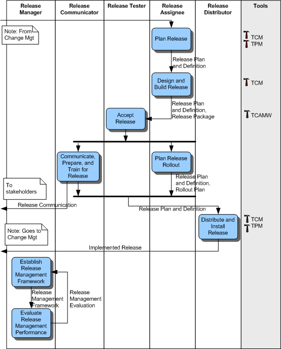

Overview
The diagram below provides an abstraction of the Release Management workflow from the IBM Tivoli Unified Process
methodology. This overview shows the "big picture" of the complete release management process to which the project team
interfaces.
The project team needs to interface closely with this team early in the lifecycle to feed into the release planning
activities. The release management team needs to feel confident in the changes being made to the application, and will
plan these changes into a specific release. Later in the project lifecycle, the final baseline and build will be
delivered to this team to become part of the larger software release package.

Activities
-
Plan Release
After an RFC has been approved, it may be sent to release management to be built, tested, and deployed as
part of a release. Some RFCs will already correspond to a release, but in other cases this activity will
determine the composition of a release from multiple RFCs.
In this activity, a schedule is created for building, testing, and deploying the release. This is called
the Release Plan. In addition, a high-level draft Release Test Plan is created.
-
Design and Build Release
Subsequent to planning the release, this activity determines what you need to build for the release, and
how you will assemble and deploy it. This may involve some rework to the Release Plan. During this
activity, you will design the release build, installation, and rollback scripts at a high-level. In
addition, you will obtain software and hardware components for the build activity, and put the test
environment in place.
After you have designed the release, this activity builds the scripts and other aspects needed to install
and deploy the release. This includes:
-
Creating the build environment
-
Creating build, install, and rollback scripts
-
Placing software in the DSL
-
Creating support, training, and deployment documentation
-
Updating the CMDB with information about the release package
-
Initiating the procurement of hardware and software needed for deployment
-
Accept Release
This activity takes a completed release package and tests it to determine if installation,
configuration, and rollback work properly. If successful, the release is ready for rollout. If not, the
release must go through another round of either design or build, and subsequent retesting.
After testing, the release package is either accepted or rejected. If it is rejected, the rework goes
through change management. If accepted, work progresses to the Plan Release Rollout activity.
-
Plan Release Rollout
In this activity, the details concerning specifically what will be done during rollout are generated. This
includes:
-
Detailed sequence of events
-
Identification of the CIs installed, changed, and removed
-
Multi-site plans
-
Back-out plans
-
Plans for communicating the release to stakeholders
-
Generating release notes for users
-
Communicate, Prepare, and Train for Release
You must not roll out releases without sufficiently preparing stakeholders, support staff, and users. In
this activity, these individuals are informed about the release and how to make use of the deployed
release.
-
Notifications about the upcoming rollout are sent to all those affected.
-
Support staff are given training to handle incidents and requests related to the release.
-
Release documentation and -- where provided -- training is also made available to users.
-
Distribute and Install Release
The rollout of a Release Package is performed in this activity. The Release Package is deployed to all CIs
identified in the Rollout Plan. The Release Package is deployed as provided, without any modifications.
After distribution, installation, and configuration, the changes are checked to ensure their functional
integrity. This may involve automated checks, user surveys, or other approaches. If the implementation
fails to meet acceptance criteria, then the back-out plan is carried out.
The CMDB is updated to reflect the fact that specific RFCs have been deployed. A subsequent review of the
related RFCs is performed by the change management process.
-
Establish Release Management Framework
This activity involves creating or updating the release management framework. This framework describes:
-
Types of releases
-
Naming and other release conventions
-
Release policies and procedures
-
DSL and DHS specifications
-
Roles and responsibilities
-
Scheduling policies
-
Process review schedule
This framework provides governance information for the other activities in release management.
-
Evaluate Release Management Performance
This activity looks at the performance of the review management process and determines if changes need to
be made to the release management framework. This includes examining:
-
Adequacy of release management resources
-
Rejected or failed releases
-
Trends in approved RFCs
-
Release management policies and procedures
|